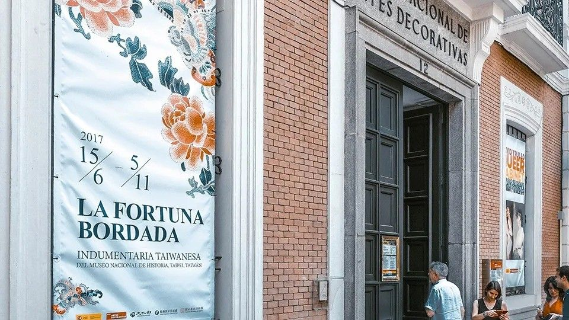
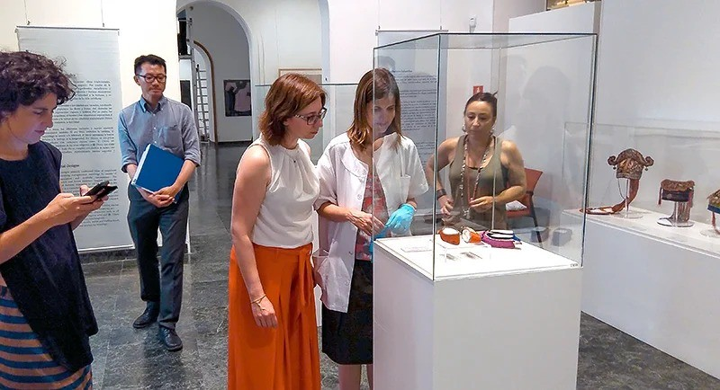
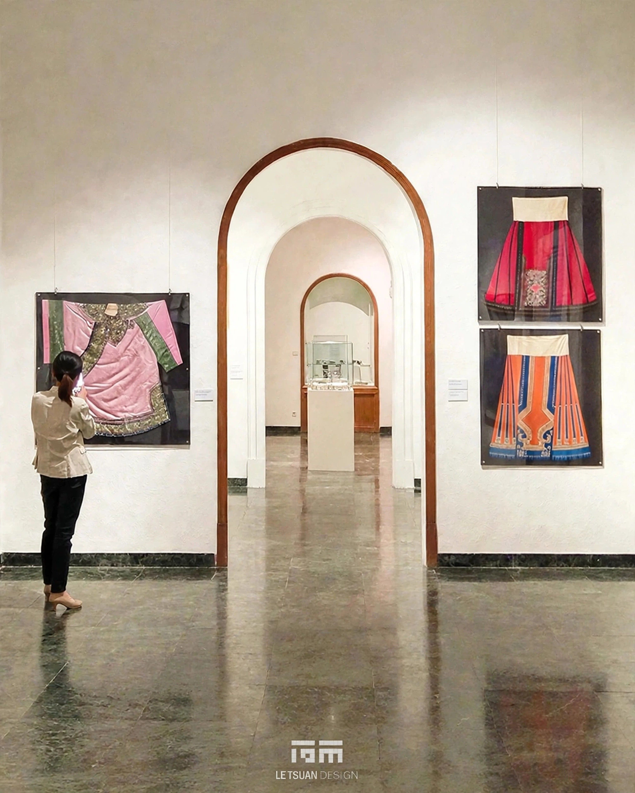
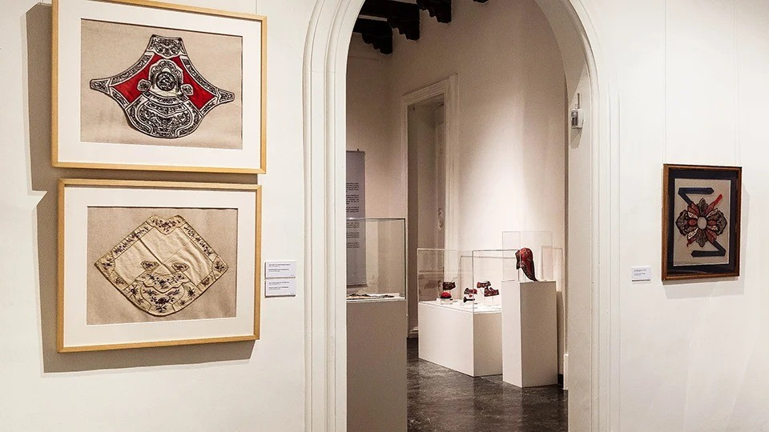
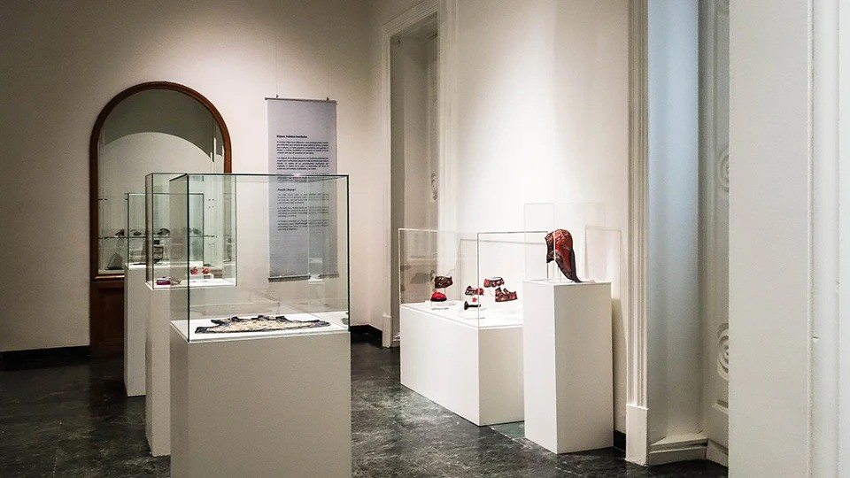
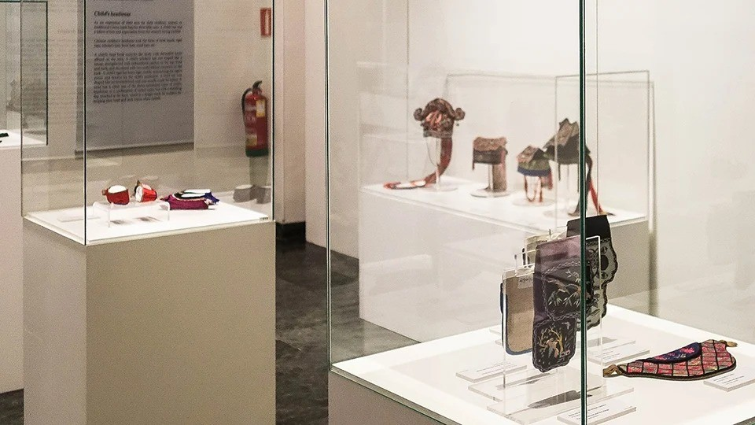
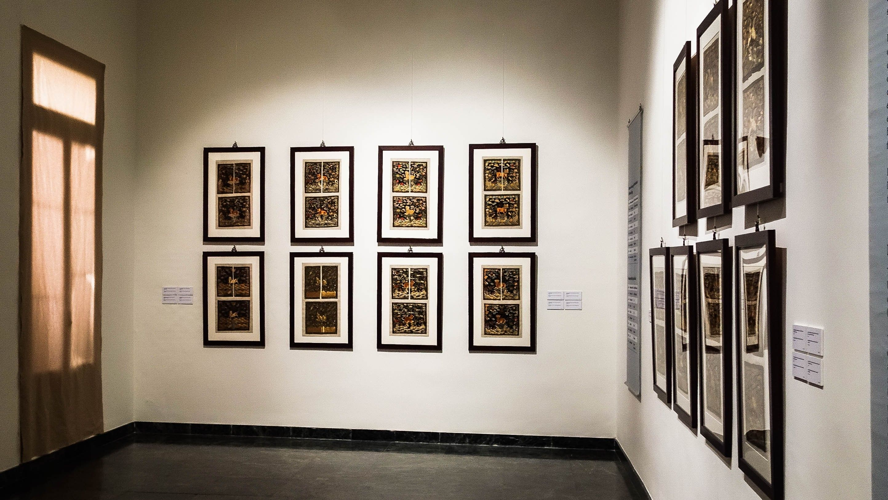
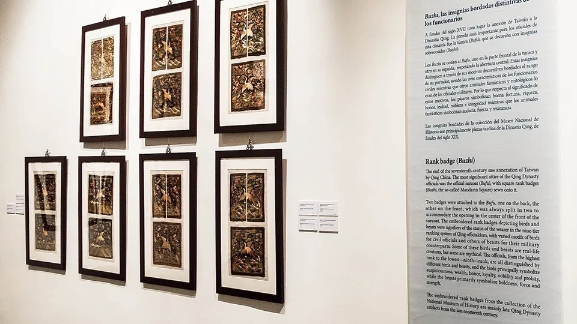

La Fortuna Bordada
LOCATION
Madrid, Spain
YEAR
2017
CATEGORY
Exhibition Design, Interior Design, Graphic Design, Visual Design, Logo Design
Never Once on Site
"La Fortuna Bordada: Taiwanese Embroidery from the Collection of the National Museum of History" opened at Spain's Museo Nacional de Artes Decorativas, the first time Taiwanese embroidery craft has been shown in full within Spain's national museum system, made possible after two years of work by Taiwan's Representative Office in Spain. The National Museum of History holds nearly a thousand pieces of Taiwanese clothing and everyday embroidery dating from the latter half of the nineteenth century onward, and this show selected 74 groups from that collection, presented under two themes: everyday dress and accessories, and officials' rank badges. We handled the spatial planning and exhibition construction design for the show. Across the entire project, though, we never had a single person on the ground in Madrid.
Design in Taiwan, Delivered as Drawings
With the artifacts needing international shipping and the venue on the other side of the world, we worked in a design-in-Taiwan, deliver-by-drawings model. The full spatial plan and every piece of display-fixture design was completed on the Taiwan side, then converted into a complete set of construction drawings and handed to a local Spanish contractor to build and install.
There was no way to stand on site and supervise, and no way to go back the next day and fix something that didn't work, so the drawings had to spell out every detail on their own. They were the only language we had to communicate with the construction team in Spain.
What the Display Stands Had to Account For
Embroidered artifacts are fragile, sensitive to light damage, and can't hold up under long-term hanging tension, so we designed dedicated case structures and a garment-suspension system around those limits. Small three-dimensional accessories like purses, embroidered shoes, and children's caps each have their own shape, so we designed acrylic display stands individually for each category, custom-fitting the support structure to the contour of every piece. All of that had to be resolved completely at the design stage, since once the pieces reached Spain there was no room left to adjust anything.
The key visuals and printed graphics translated the auspicious symbolism carried by the flowers, fruit, birds, and animals in the embroidery patterns into a visual storytelling system Western audiences could read intuitively, so cultural distance never got in the way of understanding.
This is one of the few overseas museum projects we've delivered entirely through drawings. We were never on site, and yet through a single complete set of construction documents, all 74 groups of embroidered artifacts were hung and cased in Madrid with every dimension in place.
RELATED PROJECTS







